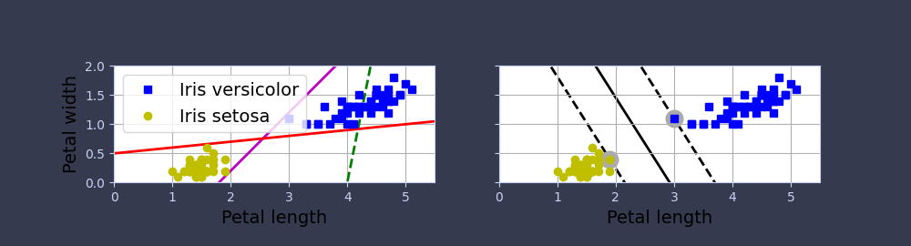

Code for Machine Learning and Data Science II Support Vector Machines
Table of Contents
These are the code snippets used in Support Vector Machines
part of Machine Learning and Data Science II.
Introduction
SVM is a type of machine learning algorithm that finds the optimal decision boundary (hyperplane) between two classes of data while maximizing the margin between the classes.
Though they are used for classification of both linear and non-linear data.
Preliminary Checks
To get started, start with checking the system information.
For this code to work the python version needs to be above 3.7.
For more info on the sys module click here
import sys # to allow acces the interpreter during runtime # A tuple containing the five components of the version number: # major, minor, micro, releaselevel, and serial. # Check if the user has the correct version assert sys.version_info >= (3, 7)
In addition, the code requires Scikit-Learn >= 1.0.1:
scikit-learn (formerly scikits.learn and also known as sklearn) is a
free and open-source machine learning library for the Python programming
language.
It features various classification, regression and clustering algorithms including support-vector machines, random forests, gradient boosting, k-means and DBSCAN, and is designed to interoperate with the Python numerical and scientific libraries NumPy and SciPy.
from packaging import version # to allow acces to determine version import sklearn # an open-source ML library # Check version of the installed sklearn assert version.parse(sklearn.__version__) >= version.parse("1.0.1")
For clear images and quality production, some setups to the matplotlib options are required.
# Import matplotlib for doing plotting import matplotlib.pyplot as plt # Change the parameters of the plot plt.rc('font', size=14) plt.rc('axes', labelsize=14, titlesize=14) plt.rc('legend', fontsize=14) plt.rc('xtick', labelsize=10) plt.rc('ytick', labelsize=10)
Linear SVM Classification
Linearly separable classes or data are a type of binary classification problem in which two classes, one positive and one negative can be separated by a decision boundary.
Decision boundary is a boundary that is a linear function of the features of the data given that separates the classes.
import matplotlib.pyplot as plt # for plotting import numpy as np # for number manipulation from sklearn.svm import SVC # for support vector classification from sklearn import datasets # access ready-to-use datasets # load the iris dataset iris = datasets.load_iris(as_frame=True) # Data matrix X = iris.data[["petal length (cm)", "petal width (cm)"]].values # Classification target y = iris.target setosa_or_versicolor = (y == 0) | (y == 1) X = X[setosa_or_versicolor] y = y[setosa_or_versicolor] # SVM Classifier model # SVC function parameters # - C : Regularization parameter (must be positive) # - kernel : Specifies the kernel type to be used in the algorithm. svm_clf = SVC(kernel="linear", C=1e100) # Fit the SVM model according to the given training data. #+--fit(X, y, sample_weight=None) svm_clf.fit(X, y)
# Bad models x0 = np.linspace(0, 5.5, 200) pred_1 = 5 * x0 - 20 pred_2 = x0 - 1.8 pred_3 = 0.1 * x0 + 0.5 def plot_svc_decision_boundary(svm_clf, xmin, xmax): w = svm_clf.coef_[0] b = svm_clf.intercept_[0] # At the decision boundary, w0*x0 + w1*x1 + b = 0 # => x1 = -w0/w1 * x0 - b/w1 x0 = np.linspace(xmin, xmax, 200) decision_boundary = -w[0] / w[1] * x0 - b / w[1] margin = 1/w[1] gutter_up = decision_boundary + margin gutter_down = decision_boundary - margin svs = svm_clf.support_vectors_ plt.plot(x0, decision_boundary, "k-", linewidth=2, zorder=-2) plt.plot(x0, gutter_up, "k--", linewidth=2, zorder=-2) plt.plot(x0, gutter_down, "k--", linewidth=2, zorder=-2) plt.scatter(svs[:, 0], svs[:, 1], s=180, facecolors='#AAA', zorder=-1)
The following code manages moslty the plotting properties of the data previously generated.
fig, axes = plt.subplots(ncols=2, figsize=(10, 2.7), sharey=True) plt.sca(axes[0]) plt.plot(x0, pred_1, "g--", linewidth=2) plt.plot(x0, pred_2, "m-", linewidth=2) plt.plot(x0, pred_3, "r-", linewidth=2) plt.plot(X[:, 0][y==1], X[:, 1][y==1], "bs", label="Iris versicolor") plt.plot(X[:, 0][y==0], X[:, 1][y==0], "yo", label="Iris setosa") plt.xlabel("Petal length") plt.ylabel("Petal width") plt.legend(loc="upper left") plt.axis([0, 5.5, 0, 2]) plt.gca().set_aspect("equal") plt.grid() plt.sca(axes[1]) plot_svc_decision_boundary(svm_clf, 0, 5.5) plt.plot(X[:, 0][y==1], X[:, 1][y==1], "bs") plt.plot(X[:, 0][y==0], X[:, 1][y==0], "yo") plt.xlabel("Petal length") plt.axis([0, 5.5, 0, 2]) plt.gca().set_aspect("equal") plt.grid() plt.savefig("images/large-margin-classification-plot.png")

from sklearn.preprocessing import StandardScaler Xs = np.array([[1, 50], [5, 20], [3, 80], [5, 60]]).astype(np.float64) ys = np.array([0, 0, 1, 1]) svm_clf = SVC(kernel="linear", C=100).fit(Xs, ys) scaler = StandardScaler() X_scaled = scaler.fit_transform(Xs) svm_clf_scaled = SVC(kernel="linear", C=100).fit(X_scaled, ys) plt.figure(figsize=(9, 2.7)) plt.subplot(121) plt.plot(Xs[:, 0][ys==1], Xs[:, 1][ys==1], "bo") plt.plot(Xs[:, 0][ys==0], Xs[:, 1][ys==0], "ms") plot_svc_decision_boundary(svm_clf, 0, 6) plt.xlabel("$x_0$") plt.ylabel("$x_1$ ", rotation=0) plt.title("Unscaled") plt.axis([0, 6, 0, 90]) plt.grid() plt.subplot(122) plt.plot(X_scaled[:, 0][ys==1], X_scaled[:, 1][ys==1], "bo") plt.plot(X_scaled[:, 0][ys==0], X_scaled[:, 1][ys==0], "ms") plot_svc_decision_boundary(svm_clf_scaled, -2, 2) plt.xlabel("$x'_0$") plt.ylabel("$x'_1$ ", rotation=0) plt.title("Scaled") plt.axis([-2, 2, -2, 2]) plt.grid() plt.savefig("images/sensitivity-to-feature-scales-plot.pdf")
Soft Margin Classification
X_outliers = np.array([[3.4, 1.3], [3.2, 0.8]]) y_outliers = np.array([0, 0]) Xo1 = np.concatenate([X, X_outliers[:1]], axis=0) yo1 = np.concatenate([y, y_outliers[:1]], axis=0) Xo2 = np.concatenate([X, X_outliers[1:]], axis=0) yo2 = np.concatenate([y, y_outliers[1:]], axis=0) svm_clf2 = SVC(kernel="linear", C=10**9) svm_clf2.fit(Xo2, yo2) fig, axes = plt.subplots(ncols=2, figsize=(10, 2.7), sharey=True) plt.sca(axes[0]) plt.plot(Xo1[:, 0][yo1==1], Xo1[:, 1][yo1==1], "bs") plt.plot(Xo1[:, 0][yo1==0], Xo1[:, 1][yo1==0], "yo") plt.text(0.3, 1.0, "Impossible!", color="red", fontsize=18) plt.xlabel("Petal length") plt.ylabel("Petal width") plt.annotate( "Outlier", xy=(X_outliers[0][0], X_outliers[0][1]), xytext=(2.5, 1.7), ha="center", arrowprops=dict(facecolor='black', shrink=0.1), ) plt.axis([0, 5.5, 0, 2]) plt.grid() plt.sca(axes[1]) plt.plot(Xo2[:, 0][yo2==1], Xo2[:, 1][yo2==1], "bs") plt.plot(Xo2[:, 0][yo2==0], Xo2[:, 1][yo2==0], "yo") plot_svc_decision_boundary(svm_clf2, 0, 5.5) plt.xlabel("Petal length") plt.annotate( "Outlier", xy=(X_outliers[1][0], X_outliers[1][1]), xytext=(3.2, 0.08), ha="center", arrowprops=dict(facecolor='black', shrink=0.1), ) plt.axis([0, 5.5, 0, 2]) plt.grid() plt.savefig("images/sensitivity-to-outliers-plot.pdf") plt.show()
Nonlinear SVM Classification
X1D = np.linspace(-4, 4, 9).reshape(-1, 1) X2D = np.c_[X1D, X1D**2] y = np.array([0, 0, 1, 1, 1, 1, 1, 0, 0]) plt.figure(figsize=(10, 3)) plt.subplot(121) plt.grid(True) plt.axhline(y=0, color='k') plt.plot(X1D[:, 0][y==0], np.zeros(4), "bs") plt.plot(X1D[:, 0][y==1], np.zeros(5), "g^") plt.gca().get_yaxis().set_ticks([]) plt.xlabel("$x_1$") plt.axis([-4.5, 4.5, -0.2, 0.2]) plt.subplot(122) plt.grid(True) plt.axhline(y=0, color='k') plt.axvline(x=0, color='k') plt.plot(X2D[:, 0][y==0], X2D[:, 1][y==0], "bs") plt.plot(X2D[:, 0][y==1], X2D[:, 1][y==1], "g^") plt.xlabel("$x_1$") plt.ylabel("$x_2$ ", rotation=0) plt.gca().get_yaxis().set_ticks([0, 4, 8, 12, 16]) plt.plot([-4.5, 4.5], [6.5, 6.5], "r--", linewidth=3) plt.axis([-4.5, 4.5, -1, 17]) plt.subplots_adjust(right=1) plt.savefig("images/svm-higher-dimensions-plot.pdf", tight_layout=False)
Soft Margin Classification
Soft Margin SVM introduces flexibility by allowing some margin violations (misclassifications) to handle cases where the data is not perfectly separable.
Suitable for scenarios where the data may contain noise or outliers.
It Introduces a penalty term for misclassifications, allowing for a trade-off between a wider margin and a few misclassifications.
X_outliers = np.array([[3.4, 1.3], [3.2, 0.8]]) y_outliers = np.array([0, 0]) Xo1 = np.concatenate([X, X_outliers[:1]], axis=0) yo1 = np.concatenate([y, y_outliers[:1]], axis=0) Xo2 = np.concatenate([X, X_outliers[1:]], axis=0) yo2 = np.concatenate([y, y_outliers[1:]], axis=0) svm_clf2 = SVC(kernel="linear", C=10**9) svm_clf2.fit(Xo2, yo2) fig, axes = plt.subplots(ncols=2, figsize=(10, 2.7), sharey=True) plt.sca(axes[0]) plt.plot(Xo1[:, 0][yo1==1], Xo1[:, 1][yo1==1], "bs") plt.plot(Xo1[:, 0][yo1==0], Xo1[:, 1][yo1==0], "yo") plt.text(0.3, 1.0, "Impossible!", color="red", fontsize=18) plt.xlabel("Petal length") plt.ylabel("Petal width") plt.annotate( "Outlier", xy=(X_outliers[0][0], X_outliers[0][1]), xytext=(2.5, 1.7), ha="center", arrowprops=dict(facecolor='black', shrink=0.1), ) plt.axis([0, 5.5, 0, 2]) plt.grid() plt.sca(axes[1]) plt.plot(Xo2[:, 0][yo2==1], Xo2[:, 1][yo2==1], "bs") plt.plot(Xo2[:, 0][yo2==0], Xo2[:, 1][yo2==0], "yo") plot_svc_decision_boundary(svm_clf2, 0, 5.5) plt.xlabel("Petal length") plt.annotate( "Outlier", xy=(X_outliers[1][0], X_outliers[1][1]), xytext=(3.2, 0.08), ha="center", arrowprops=dict(facecolor='black', shrink=0.1), ) plt.axis([0, 5.5, 0, 2]) plt.grid() plt.savefig("images/sensitivity-to-outliers-plot.pdf") plt.show()
Gaussian RBF Kernel
rbf_kernel_svm_clf = make_pipeline(StandardScaler(), SVC(kernel="rbf", gamma=5, C=0.001)) rbf_kernel_svm_clf.fit(X, y)
from sklearn.svm import SVC gamma1, gamma2 = 0.1, 5 C1, C2 = 0.001, 1000 hyperparams = (gamma1, C1), (gamma1, C2), (gamma2, C1), (gamma2, C2) svm_clfs = [] for gamma, C in hyperparams: rbf_kernel_svm_clf = make_pipeline( StandardScaler(), SVC(kernel="rbf", gamma=gamma, C=C) ) rbf_kernel_svm_clf.fit(X, y) svm_clfs.append(rbf_kernel_svm_clf) fig, axes = plt.subplots(nrows=2, ncols=2, figsize=(10.5, 7), sharex=True, sharey=True) for i, svm_clf in enumerate(svm_clfs): plt.sca(axes[i // 2, i % 2]) plot_predictions(svm_clf, [-1.5, 2.45, -1, 1.5]) plot_dataset(X, y, [-1.5, 2.45, -1, 1.5]) gamma, C = hyperparams[i] plt.title(f"gamma={gamma}, C={C}") if i in (0, 1): plt.xlabel("") if i in (1, 3): plt.ylabel("") plt.savefig("images/moons-rbf-svc-plot.pdf")